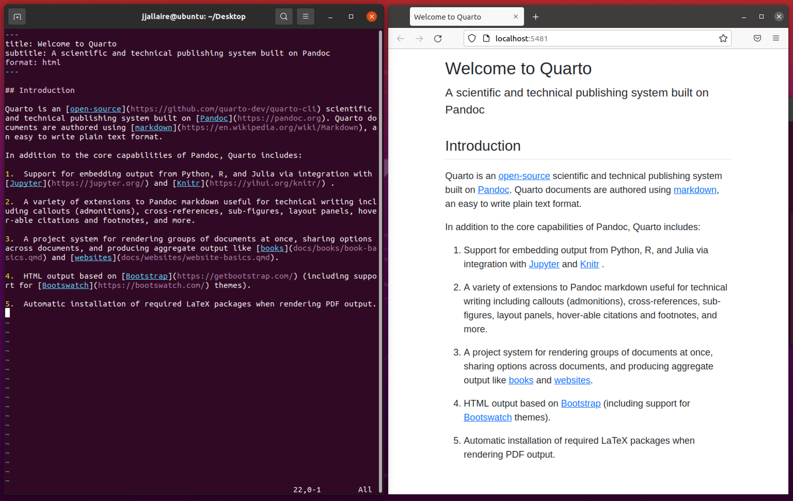

Introduction to Quarto
Part of the course “Track, organize and share your work: An introduction to Git for research”


Konrad Pagenstedt ![]()
November 29, 2024
What is Quarto?
“Publishing system” by Posit 1
- Based on RMarkdown
- Able to execute code
- Supports multiple programming languages
- Integrated in RStudio
Usecases
- Articles/Reports
- Websites
- Presentations
- Books

How to render Quarto files
1. Preview
- The document will be rendered and a web browser with a “live preview” opened
- Position this browser so that you can see it as you edit and save the document
- Every time you save, the preview will be updated
- Windows Users: Note, that
quarto previewmight not work in Git Bash! Use theRenderbuttons in RStudio (see right column)



Links and images
| Input | Output |
|---|---|
|
https://quarto.org/ |
|
Quarto |
|
 |
|
|
Code chunks
- Executable code: Quarto files support code execution during rendering
- Code chunks can be interactive
- Customizable options: Specify various options for code chunks
- You can also use inline code
- R code enclosed by:
```{r} code ```

Footnotes
(the company formerly known as RStudio)